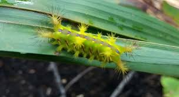
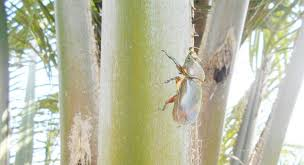
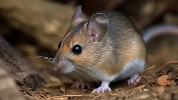
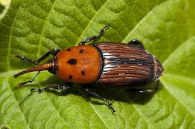
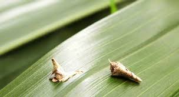

Sistem Pakar Tanaman Sawit
Home
Penyakit
Hama
Penanganan Umum
Diagnosis
Hama pada Tanaman Sawit
Ulat Api (Setothosea asigna)

Penyebab:
Serangan ulat api yang memakan daun tanaman sawit.
Gejala:
Daun berlubang dan rusak, tanaman menjadi lemah.
Penanganan:
Pengendalian secara mekanis dengan mengambil ulat secara manual.
Penggunaan insektisida yang sesuai.
Kumbang Tanduk (Oryctes rhinoceros)

Penyebab:
Serangan kumbang tanduk yang merusak titik tumbuh tanaman sawit.
Gejala:
Lubang pada batang dan pelepah daun, tanaman tumbuh tidak normal.
Penanganan:
Pengendalian secara mekanis dengan mengambil kumbang secara manual.
Penggunaan insektisida yang sesuai.
Tikus (Rattus tiomanicus)

Penyebab:
Serangan tikus yang memakan buah dan batang tanaman sawit.
Gejala:
Buah berlubang dan rusak, batang tanaman terkikis.
Penanganan:
Pengendalian secara mekanis dengan memasang perangkap tikus.
Penggunaan rodentisida yang sesuai.
Kumbang Daun (Temnoschoita quadripustulata)

Penyebab:
Serangan kumbang daun yang memakan daun tanaman sawit.
Gejala:
Daun berlubang dan rusak, tanaman menjadi lemah.
Penanganan:
Pengendalian secara mekanis dengan mengambil kumbang secara manual.
Penggunaan insektisida yang sesuai.
Ulat Kantong (Metisa plana)

Penyebab:
Serangan ulat kantong yang memakan daun tanaman sawit.
Gejala:
Daun berlubang dan rusak, tanaman menjadi lemah.
Penanganan:
Pengendalian secara mekanis dengan mengambil ulat secara manual.
Penggunaan insektisida yang sesuai.